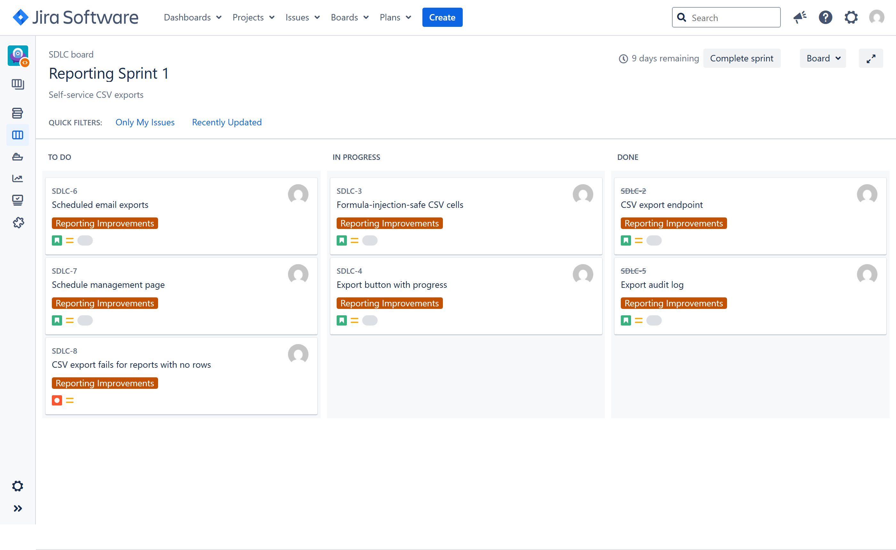
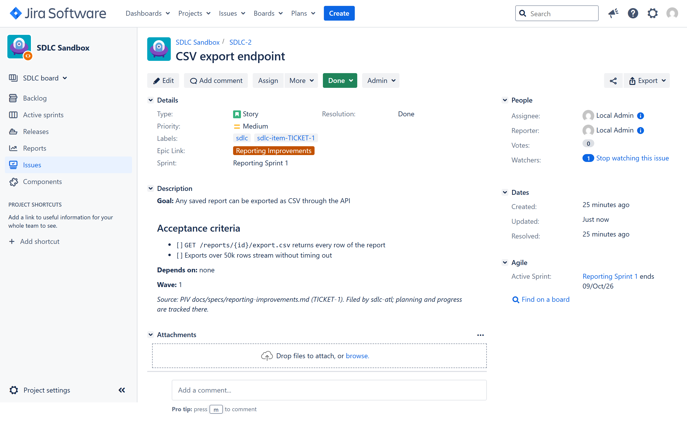
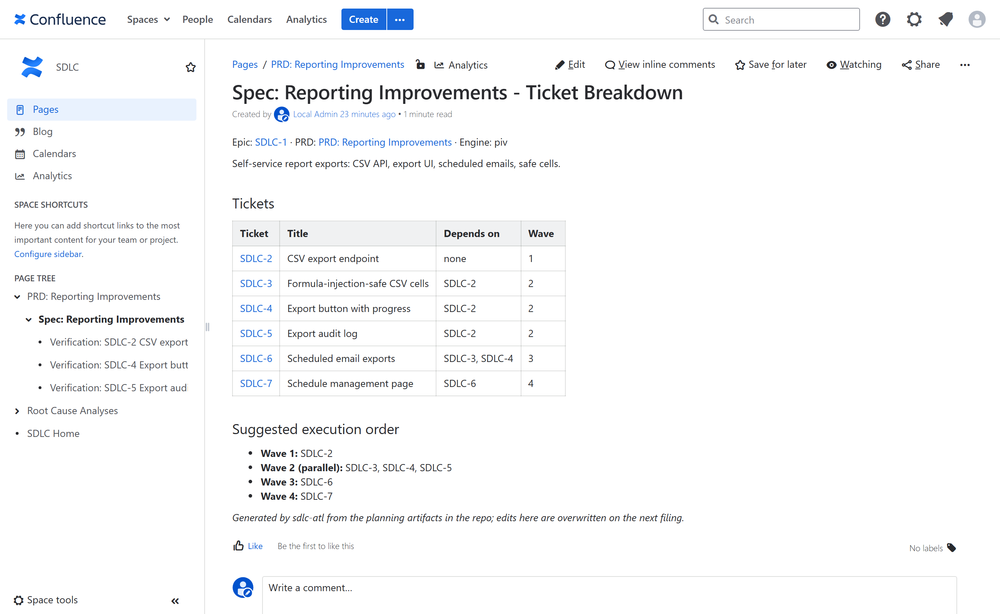
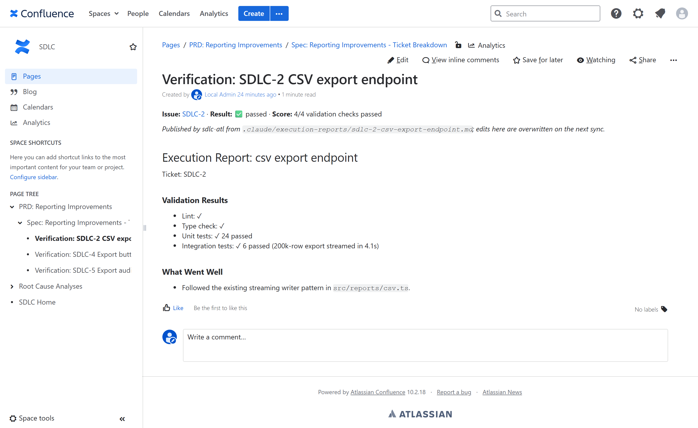
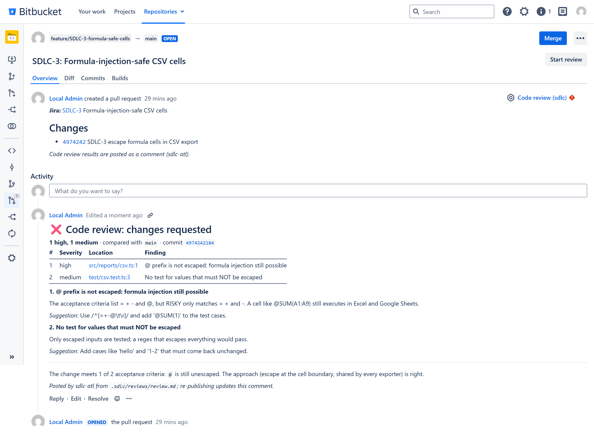
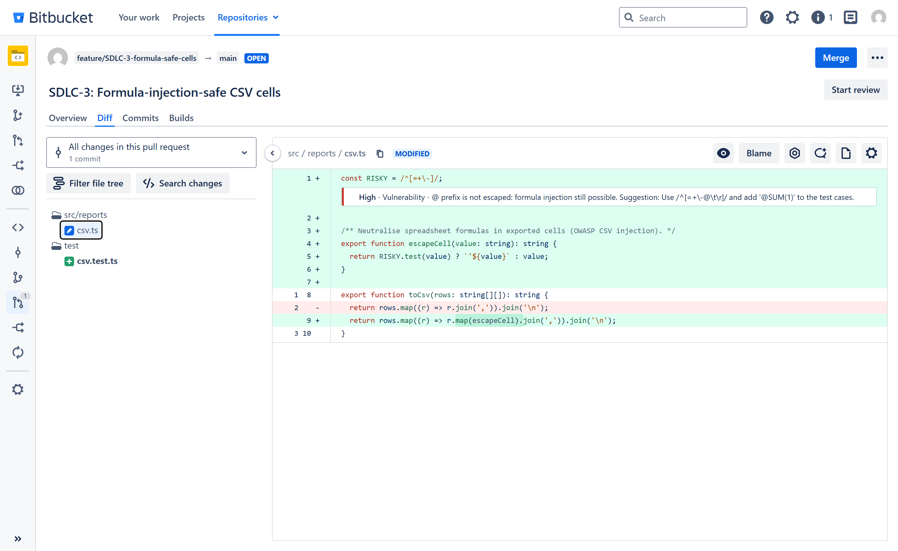
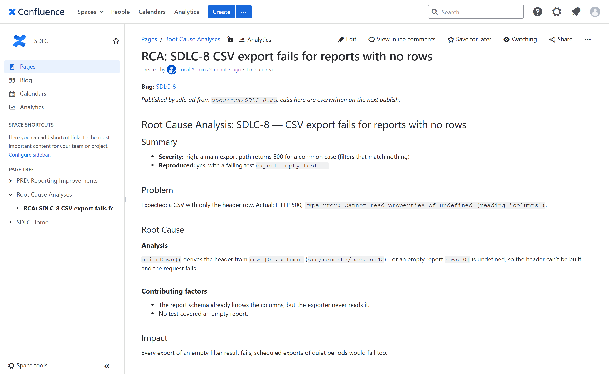

sdlc-work guides AI coding agents through the process we already run and keeps Jira, Confluence and Bitbucket or GitHub current automatically. Less status admin, more verified, reviewed code.
Real screens from our Jira, Confluence and Bitbucket Data Center test stack. sdlc-work drove a sample feature (self-service CSV exports) end to end; nothing on these pages was updated by hand.



A story is Done only when it passes validation, and every pull request gets an AI code review before a human looks at it.


Reviewers see findings where the code is, and every bug leaves an analysis the team can learn from.

